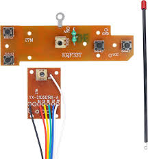

Learn how the 4-Channel RC 27MHz Transmitter and Receiver work together to control models and robots.
The 4-channel RC transmitter sends signals to the receiver, controlling four different channels such as forward, backward, left, and right movements for controlling an RC car or robot. The 27MHz frequency ensures reliable communication between the transmitter and the receiver.
Use the buttons to control the car!